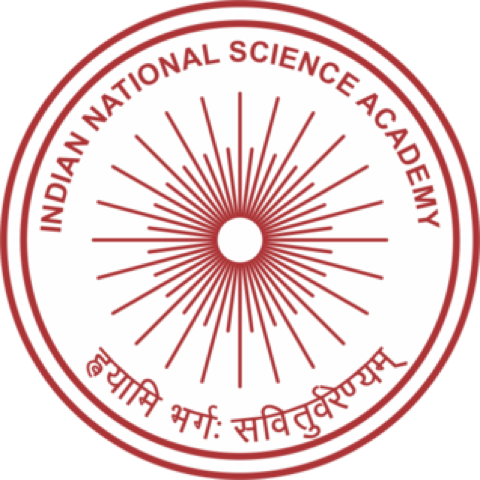
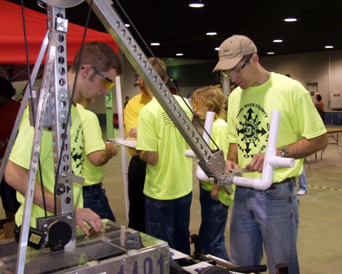
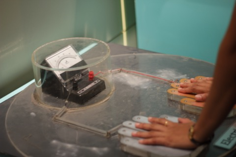
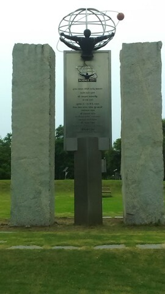
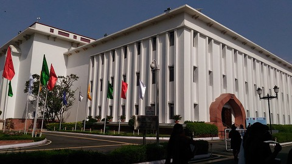

National Award for Science Popularisation
Conferred by the Indian National Science Academy in recognition of sustained contributions to communicating science to the public and to students across India.
I am a scientist and science educator. For close to three decades I have worked at the intersection of research, classrooms and public policy — most recently as the Advisor and Member Secretary of the Gujarat Council on Science & Technology (GUJCOST), and as a Senior Scientist at Gujarat Science City, Ahmedabad.
My academic training is in the physical sciences (Tata Institute of Fundamental Research). The work that has stayed with me, however, is the work of connecting curious minds with the endless possibilities of science — through district science centres, community radio, student robotics festivals, hackathons, planetarium shows, and policy that puts young innovators at the front.
I was conferred a National Award by the Indian National Science Academy (INSA) for contributions to the popularisation of science. I continue to write, speak and advise on the theme I believe in most — the joy of science.

Conferred by the Indian National Science Academy in recognition of sustained contributions to communicating science to the public and to students across India.

One of India's largest student robotics festivals. ROBOFEST Gujarat 5.0 saw 200+ patents filed by young innovators in a single day — a national benchmark for youth-led IP creation, featured by WIPO's eTISC.

Helped conceptualise and roll out a network of community science centres and regional observatories across Gujarat, taking hands-on science into towns and villages well beyond metros.

Helped grow Science City into a flagship destination — exhibitions, planetarium shows, robotics gallery, aquatics gallery and student outreach that have hosted millions of visitors over the years.
Public lectures, columns, broadcasts and panel talks on the "Joy of Science". Recent appearances include the ET Viksit Gujarat Summit and National Science Day programmes at Gujarat Science City.

Advisor to state and national initiatives on science policy, innovation, and entrepreneurship; contributed to roadmaps for India's science and technology ecosystem through 2047.
For talks, advisory engagements, partnerships in science education and outreach, or media enquiries — the easiest channels are LinkedIn and Twitter.